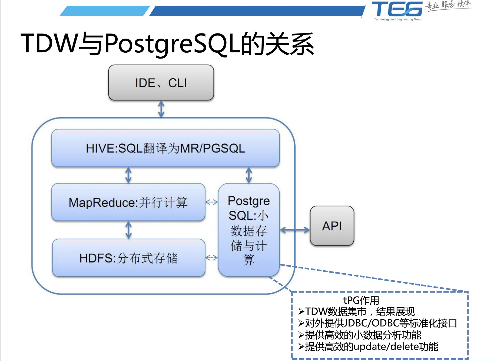

腾讯004TDW与PostgreSQL数据互访问功能
来源网络整理
前言
TDW作为一个离线数据分析系统，在处理海量数据方面，通过并行计算，有很好的性能优势。
但是想用一个大而全的系统解决所有问题一般也是不现实的，同样，TDW也有它的劣势，
比如对小数据处理性能低，update/delete性能差、接口不丰富等。
因此，TDW引入了一个强大的开源数据库PostgreSQL，并对其做一些功能扩展，使之有访问TDW数据的能力；
同时在TDW中开发了一种新的存储引擎——“pgdata存储引擎”，使得TDW具备读写PostgreSQL中的数据的能力。
TDW作为一个离线数据分析系统，在处理海量数据方面，通过并行计算，有很好的性能优势。
但是我们知道，想用一个大而全的系统解决所有问题一般也是不现实的，
同样，TDW也有它的劣势,比如对小数据处理性能低，update/delete性能差、接口不丰富等。
因此我们引入一个强大的开源数据库PostgreSQL，并对其做一些功能扩展，使之有访问TDW数据的能力；
同时我们在TDW中开发了一种新的存储引擎，我们称之为pgdata存储引擎，使得TDW具备读写PostgreSQL中的数据的能力。
TDW与PostgreSQL互访问功能的实现，对TDW是一个强有力的补充，这些主要体现在如下3点：
- 弥补TDW接口不丰富的短板 TDW缺乏标准化的JDBC/ODBC，编程接口也不丰富，而PostgreSQL有社区强大的力量，提供了JDBC/ODBC, shell,C/C++, C#, python, perl等各种语言的接口，用户通过这些丰富的接口和我们开发的PostgreSQL的TDW桥接工具tdwlink，访问TDW中的数据。
- 弥补TDW小数据分析效率底的短板 TDW在海量数据处理时，可以发挥它并行执行的优势。但是对于小数据分析，它的性能反而不如传统的DB。使用PostgreSQL，对于10GB以内的数据分析，可以获得更好的性能和时间响应，一般可以在秒级返回结果，相比TDW分钟级的响应，tPG在这种场景下更有优势。
- 作为TDW的pgdata存储引擎，弥补TDW update/delete效率底下的短板 TDW作为数据仓库系统，对于记录级的update/delete支持不是很好。在TDW中记录级的update/delete，会导致整个表的重写，也就是说，即使delete一条数据，也会导致整个表重写一遍，耗费大量系统资源。而tPG作为传统数据库，记录级的update和delete效率非常高。 PostgreSQL系统在TDW生态圈中的位置如下图所示，tPG是我们对扩充之后的PostgreSQL的一个叫法.
下面我们分两个部分对TDW与PostgreSQL的互访问功能做一个介绍，也即是pgdata存储引擎以及tdwlink功能。
一、pgdata存储引擎
TDW本身支持多种存储格式，包括textfile， rcfile，pbfile，在这个基础上，
我们开发一种新的存储引擎，也即pgdata存储引擎，能够透明的存储以及访问PostgreSQL中的数据，
具体情况如下图
在使用上，只需要在创建表的时候指定为pgdata存储引擎即可，
例如使用如下语句就可以创建此类型的外表
create external tablefoo(idx bigint, str string) stored as pgdata
在后续访问过程中就和使用其他TDW表一般即可，在此简单说明一下访问的实现方式，
访问的数据流大致如下
1. 在解析SQL查询语句时，先分解出每个子查询，然后对每个子查询总是会首先判断当前查询涉
及的表中是pgdata外表，如果没有DB外表则走正常的查询语句执行流程；
2. 如果有pgdata外表, 接着再检查在本次查询中涉及到的外表数据是否已经导入，
如果导入则直接复用已经导入的数据，如果没有则对相应的子查询进行加工，
将其转换为相应的标准关系型数据库SQL语句，然后从表中获取连接信息，使用JDBC执行查询语句；
3. 将查询结果的数据从数据库中导入到位于tmp目录下的一个随机HDFS目录中，这个随机目录使用UUID生成，
因此可以保证唯一性，而不与其他查询语句产生冲突，然后将其设置为外表的数据所在的HDFS文件路径，
Mapreduce任务会自动读取该路径作为任务的输入路径；
4. 在该条查询执行结束以后，并且查询结果已经获取成功，则清除掉这个临时文件。
如果查询出现了异常也会自动的清理到已经导入的垃圾数据信息。
二、tdwlink功能
SQL标准中包含了一个名为SQL/MED也即"SQL Management of External Data"的功能，
PostgreSQL在2011年的9.1版本使用一种叫Foreign Data Wrappers的机制对此标准做了只读支持，
开发人员只需要对相应的数据源开发相应的插件即可通过PostgreSQL对远端数据源进行访问。
目前社区已经有很多基于此功能开发的插件，诸如oracle_fdw，mysql_fdw，redis_fdw等，
我们团队基于PostgreSQL的这个特性，开发了具备访问TDW数据能力的插件，称之为tdw_fdw，
可以参考下图
为了方便用户使用此功能，我们开发了一个存储过程tdwlink，
用户只需要事先配置好对应的Foreign server以及认证信息，即可很方便的使用，
例如我们已经定义好了tdw_svr这个server，想访问tdw里的test库的test表，
我们只需要select tdw_meta.tdwlink(‘tdw_svr’, ‘test’, ‘select col1, col2 from test’)即可。
由于此函数是通过PostgreSQL提供的，因此我们可以使用PostgreSQL提供的任意接口来使用，
这样也间接的扩充了TDW所具备的访问接口。
这里补充一点，我们的tdw_fdw插件是基于PostgreSQL 9.1版本开发的，
这个版本的Foreign Data Wrappers只能对外部数据源提供只读访问，
因此我们的tdw_fdw只能够提供对TDW的只读访问，
而最新发布的PostgreSQL9.3版本的Foreign Data Wrappers已经提供写支持，
这个也是我们的tdw_fdw插件后续可以进行功能扩充的地方。
